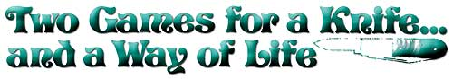

Two Games For A Knife... And A Way Of Life
By Edward Morris
May/June 1978
Back when I was a lad-a period during which the pterodactyl was our national mascot-the pocket knife was as common as . . . well . . . pockets. And when it wasn't gouging out a corncob for a pipe, sharpening a pencil, or hacking amorous indelicacies into tree trunks, the instrument was usually being flipped around in a game of mumbly-peg.
Later, city slickers would mutate the competition into something called knife baseball . . . but only the language and the scoring changed. The moves stayed the same.
A serviceable two-bladed pocket knife will cost anywhere from $1.50 to $10 or more . . . but the cheaper the better if it's going to be used mainly for games. I bought the one I still carry-a Barlow-at a Pennsylvania feed-and-grain store seven years ago for 98 cents.
In mumbly-peg, the object is to score 300 points before your opponent does. And it used to be that the loser had to pull a matchstick-sized peg out of the ground with his or her teeth (hence the name of the game).
The peg was pounded into the ground by the winner-using the knife handle-who graciously asked, "Do you want me to hit it once with my eyes open or twice with them closed?" Little wonder the practice was called "rooting the peg"! Nowadays, it may be enough just to make the highest score. It all depends on the hardiness and fastidiousness of the players.
Knife baseball was played exactly the same way as mumbly-peg, but was-as I've mentioned-scored differently. Instead of going for 300 points, the object was to score runs. Both pastimes, however, were always good equalizers since one did not necessarily control the knife better because of greater age or size. I used my juvenile skills mercilessly to even things up with my father, who was just as ruthless in checkers.
To "get set" for either game, the small pointed blade of a pocket knife is opened up completely, while the large whittling blade is opened only halfway. Then the first player taps the point of the whittling blade into the ground (or a soft board) just enough to keep it balanced. Finally, the knife is flipped by a quick upward snap of the index finger under the back end of the handle.
The position in which the knife sticks determines the score as shown in the accompanying photos. If it falls on its side, that's a lost turn in mumbly-peg and an out in baseball.
Despite its apparent potential for bloodletting, I never saw anyone injured in these knife-twirling pastimes . . . unless you want to count a poor-sport cousin of mine who mashed his nose once while angrily rooting the peg!
|
 ABOVE RIGHT: Starting position for both games. ABOVE: You've just ""scored"" another turn in mumbly-peg and a walk in baseball. IMMEDIATELY ABOVE: Either 25 points or double . . . 75 or triple . . . 100 or a home run . . . and?too bad!?either a lost turn or a strikeout. |
 |
|